Account Opening Re-design
Redesigning Account Opening experience for BOCHK banking app

Redesigning Account Opening experience for BOCHK banking app
The BOCHK Banking App is a comprehensive mobile banking solution. It offers a wide range of services including account opening, wealth management, investment, and spending, all in one app. With just a HKID card and address, you can open an account without visiting a branch.
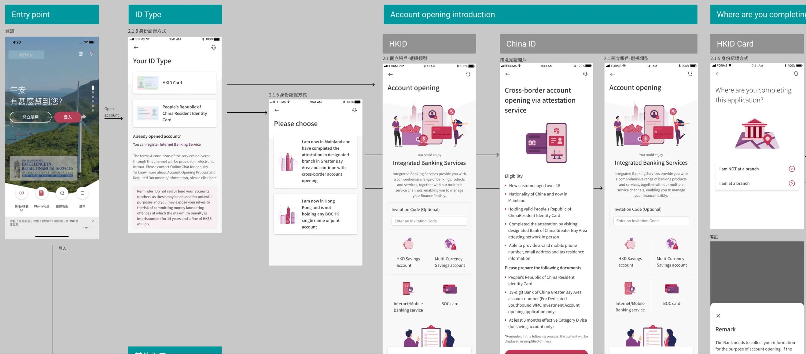
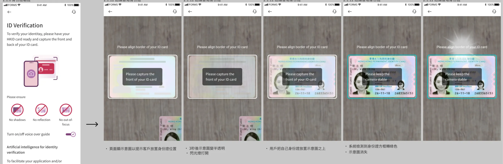
I'm the lead product designer for this project. I collaborated with Business Analysts, Product Managers, and IT developers throughout this project.

The goal is to streamline the account opening process, and reduce dropoff for each steps, thus increase the overall conversion rate

Texts used in the account opening are confusing to customers, choices are often conflicting, with no clear sight what to expect next.
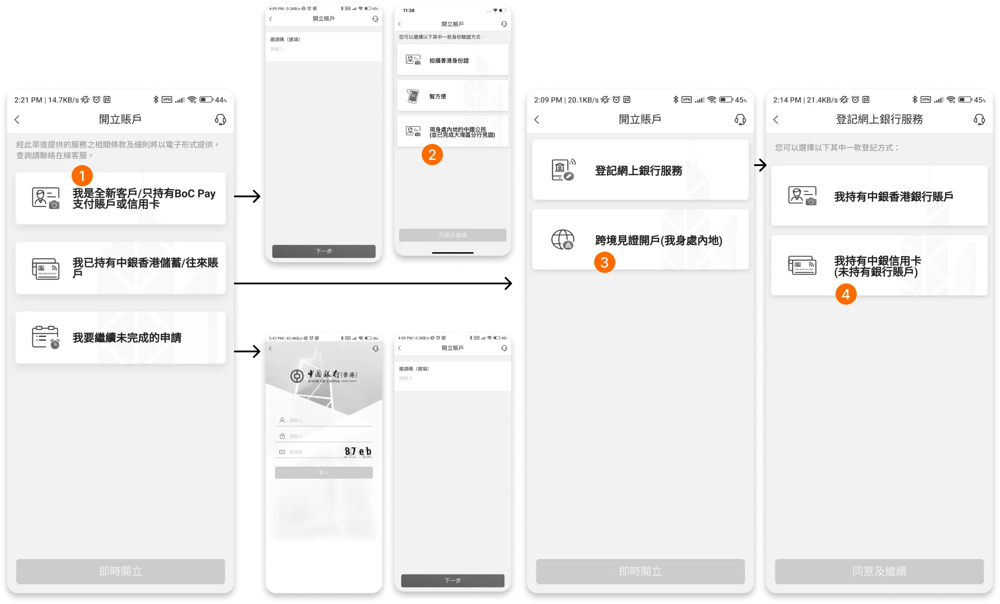
The application process did not discuss what the benefits are for opening an account, while the competitors provide concise and easy-to-read texts for customers to understand what the benefits are.

Some pages in the account opening form are extremely long, this makes the application form difficult to complete for the customers. Validation errors are difficult to be spot since the content is so overwhelming, it is hard to pick out individual errors.

During the account opening process customers are asked to scan their faces. The facial recognition screen is poorly designed. For compliance reasons, this step is required to complete in less than 7 seconds. Customers will have to grasp large amount of instructions in a short time. There is also a count down clock which put pressure onto the customer.
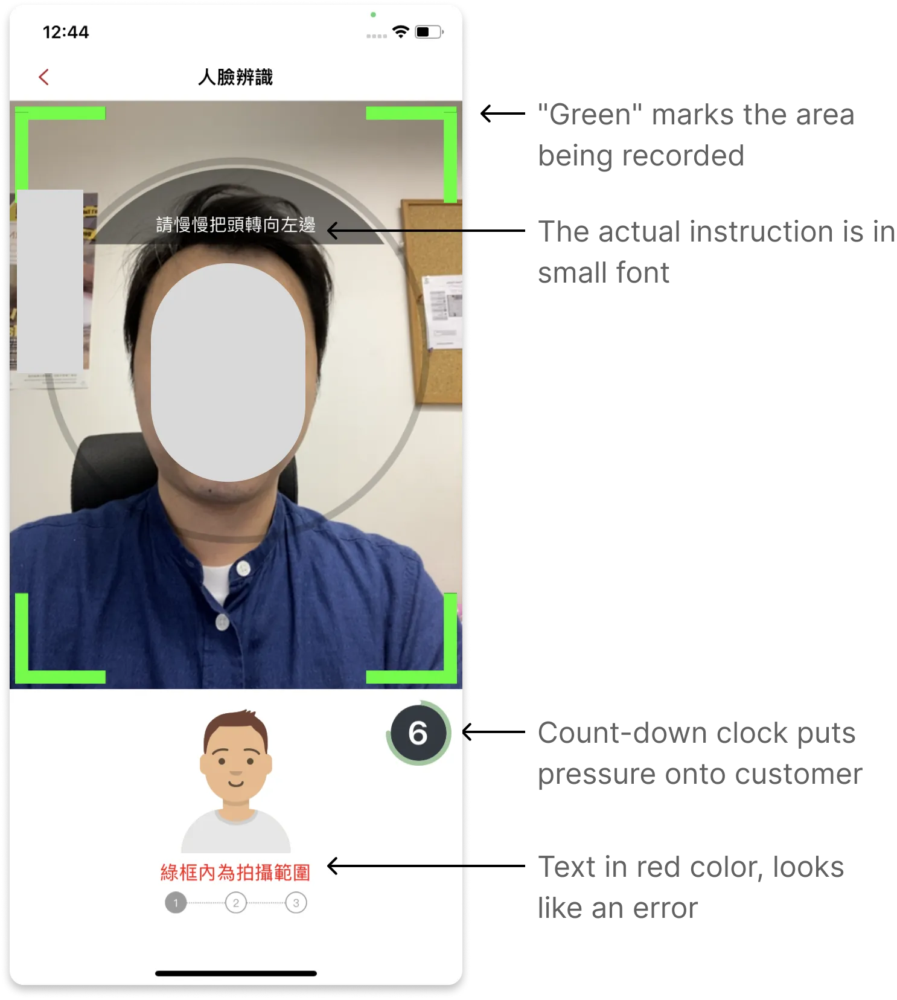
Customers are asked to complete their home address. To assist customers enter their address, there is a address search function. However the function is poorly designed, customers will often have to jump between an inline search box and an overlay window, which can be inconvenient to customers.
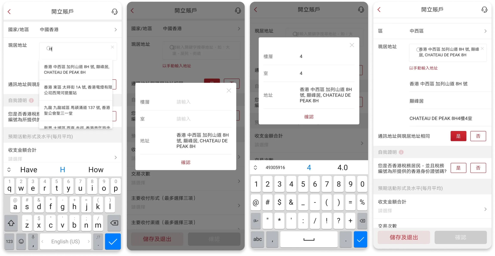
The journey is being reworked to address these different business needs
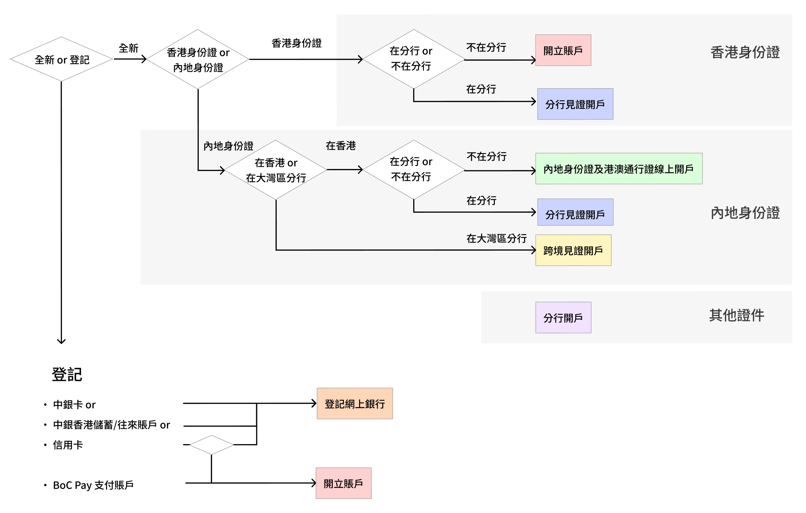
The previously discovered navigation issues were resolved by reworking the button labels, "contrasting options" are presented to aid customer's selections.
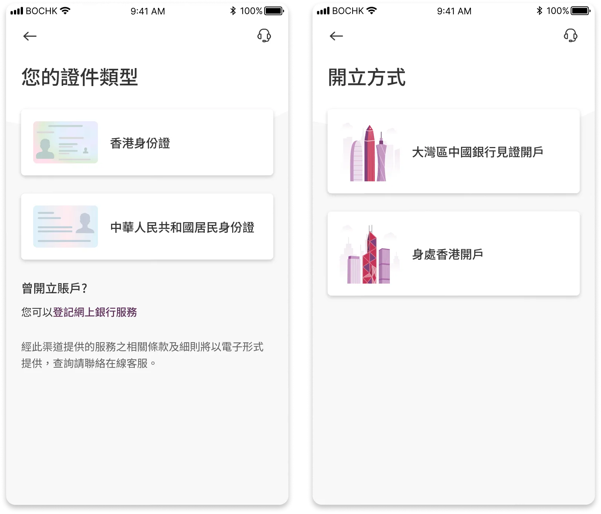
An intro page is added to describe to the customer what sort of benefits are offered to the customer. I worked with an illustrator to create these drawings.
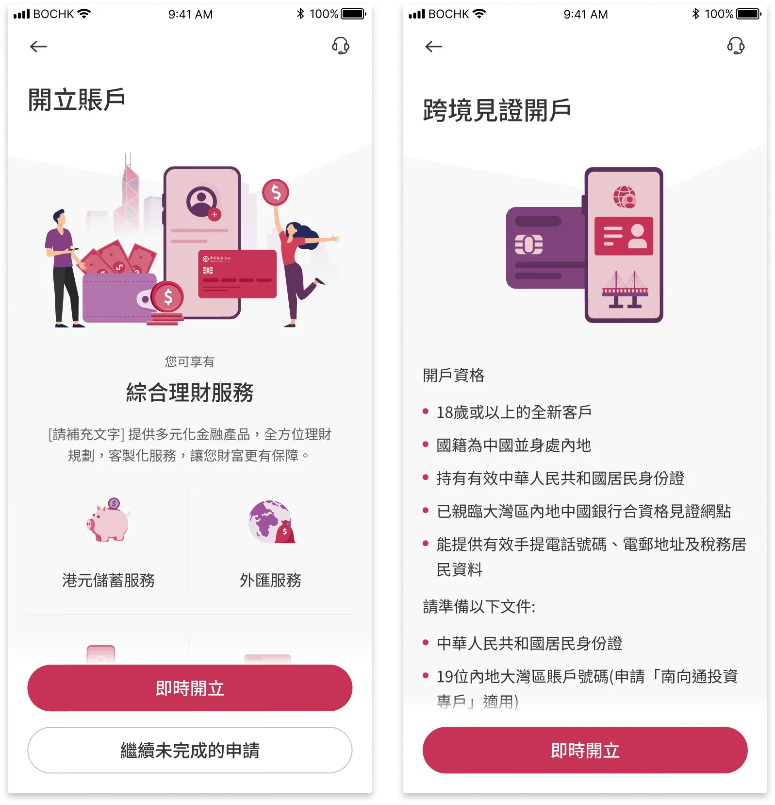
Customers from mainland China requires additional documents to open their accounts, the required documents are listed early in the user journey.

During the account opening process customers are asked to scan their faces. The facial recognition screen is poorly designed. For compliance reasons, this step is required to complete in less than 7 seconds. Customers will have to grasp large amount of instructions in a short time. There is also a count down clock which put pressure onto the customer.
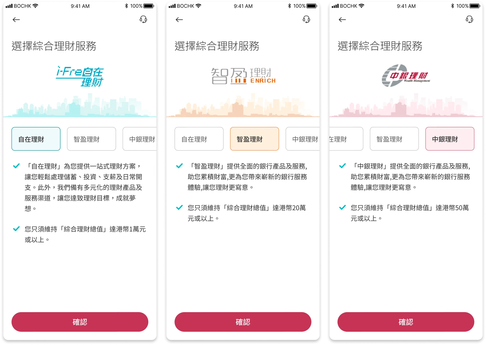
Provide information of each tier services to the customer
Facial recognition step is being reworked, with clear and on-screen instructions

The address search function is enhanced with advanced search and clearly organized into different regions
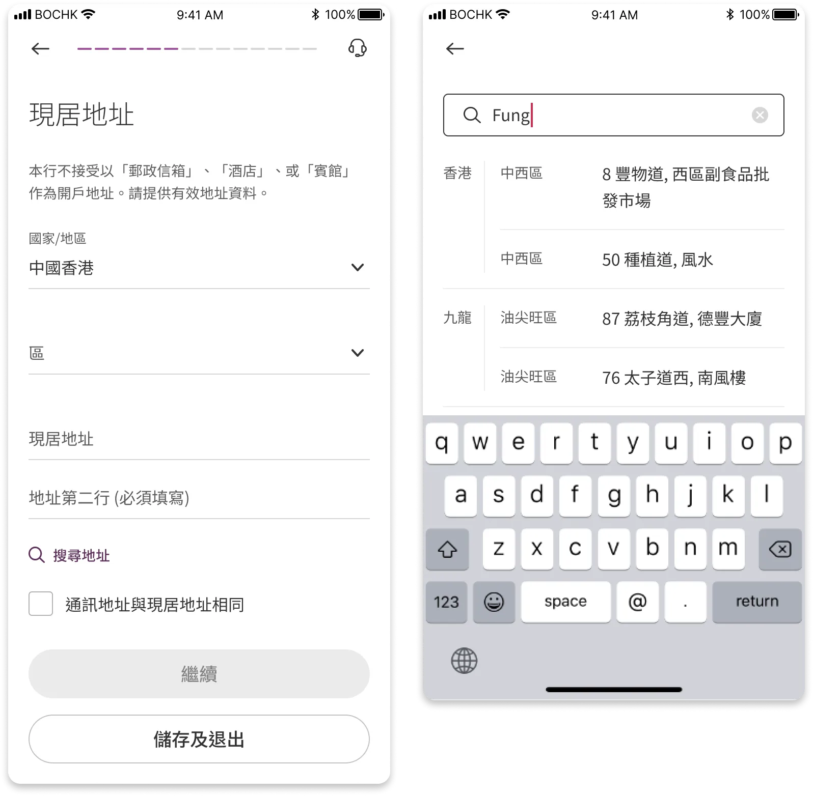
The journey is being reworked to address these different business needs
100+ finalised screens were delivered in the end. For bank projects, various stake holders including the platform owner, product managers, compliance, and IT have to agree on the solution. Excellent communication were maintained between these parties throughout the project.
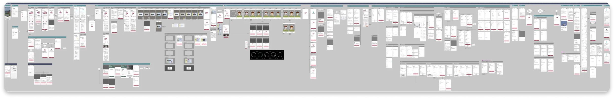
For a project of this scale, even though we have already fixed plenty of bugs before public release, there are bound to be minor bugs.
This is a crucial next step for every UX improvement or product launch. With informed, actionable insights, we are able to design a better experience for our consumers.
To follow through our product roadmap and continue to stick to our design principles.